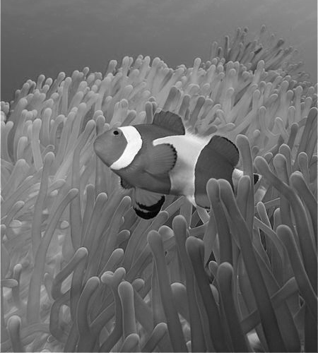
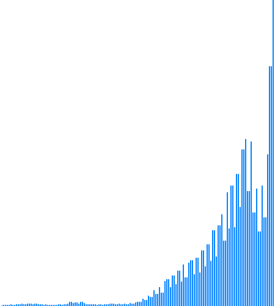
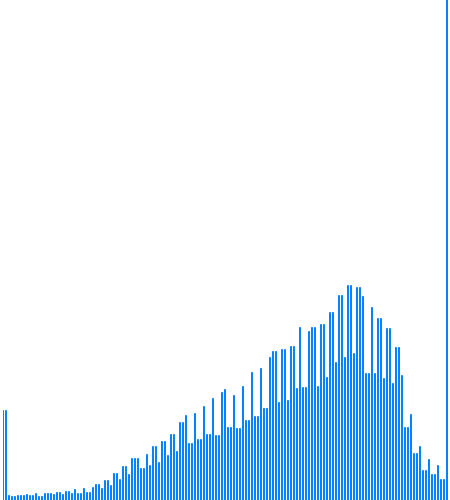
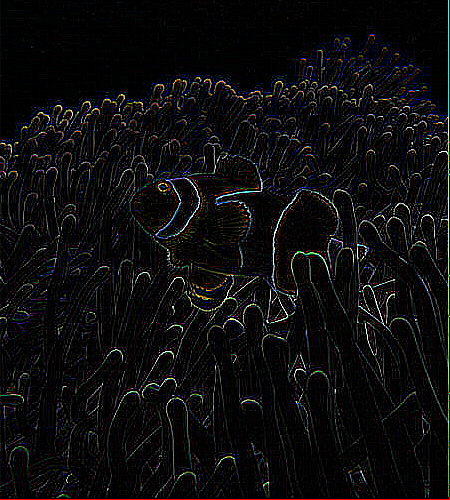
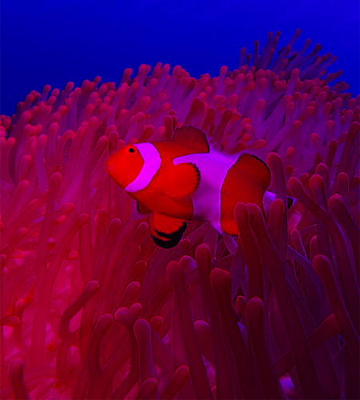
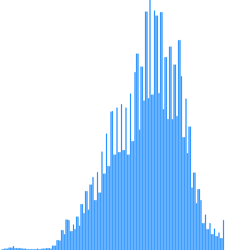

IMAGE HISTOGRAM
PROCESSING & SOFTWARE - P5.JS
La siguiente implementación tiene como fin mostrar una de los temas más importantes en el desarrollo de imágenes que es un histograma donde se representa la distribución que tiene cada uno de sus distintos tonos de la imagen, también nos sirve como una poderosa herramienta que permite controlar la forma que se quiere mostrar en una imagen.
Las diferentes líneas horizontales presentes en el histograma representa la cantidad de píxeles existentes en la imagen para cada uno de los diferentes tonos, como se logra observar en la siguiente imagen. El histograma representa los tonos que van desde un negro puro, pasando por el gris, hasta el blanco puro.

Es importante aclarar que un histograma no indica si la imagen esta mal, simplemente ayuda al observador como herramienta para que exponga la imagen como lo desea, por ejemplo el histograma nos permite identificar algunos aspectos como:
| Características de la Imagen | Histograma |
|---|---|
Para un paisaje nublado el histograma tiende a desplazarse a la izquierdaTonos apagados |
 |
Para una imagen con muchas zonas oscuras o en sobra el histograma muestra un pico en el extremo izquierdo.Sombras o zonas oscuras |
 |
Para imágenes en contraluz el histograma muestra muy pocas zonas grisesContraluz |
 |
Adicional a las características y tonalidades anteriormente mencionadas también podemos identificar sobreexposición de la luz y zonas quemadas, sombras pálidas, distribución homogénea, entre otras más. Esta información está basada en el artículo de referencia para profundizar en este tema del sitio web thewebfoto.com.
Comandos
| Tecla | Operación | Histograma | Imagen resultante |
|---|---|---|---|
 |
Original |  |
 |
 |
Media aritmética(Ecala de grises) |
 |
 |
 |
Componente más grande(Ecala de grises) |
 |
 |
 |
Promedio ponderado Luma(Ecala de grises) |
 |
 |
 |
Colores opuestos |  |  |
 |
Acentuar los bordes |  | |
| Detección de bordes |  |
 | |
Máscara de desenfoque 5 × 5(SIN MÁSCARA DE IMAGEN) |
 |
 |
|
 |
Sustraer componente Rojo(Cian) |
 |
|
 |
Sustraer componente Verde(Magenta) |
 |
 |
 |
Sustraer componente Azul(Amarillo) |
 |  |
p5*js Code
let lienzo_01;
var maxRange = 256
var histogram = new Array(maxRange);
var lienzo01;
var lienzo02;
var heightI = 600;
var widthI = 1000;
let redC=0;
let greenC=0;
let blueC=0;
//Histograma
var hist = new Array(256);
function preload() {
img_01 = loadImage('https://cors-anywhere.herokuapp.com/https://viajes.nationalgeographic.com.es/medio/2019/04/10/istock-686026812_b0758d23_1280x720.jpg');
img_02 = loadImage('https://cors-anywhere.herokuapp.com/https://viajes.nationalgeographic.com.es/medio/2019/04/10/istock-686026812_b0758d23_1280x720.jpg');
}
function setup() {
var myCanvas = createCanvas(widthI, heightI);
myCanvas.parent('histogram');
background(255);
noStroke();
calcHis();
}
function draw() {
drawHis();
img_02.resize(width / 2,0);
image(img_02, 0, 0);
}
//Calcula los valores del histograma.
function calcHis(){
//img.filter(GRAY);
img_02.resize(width / 2,0);
image(img_02,0,0);
for (i = 0; i < 256; i++) {
hist[i] = 0
}
// Calculate the histogram
for (var i = 0; i < img_02.width; i++) {
for (var j = 0; j < img_02.height; j++) {
var bright = int(brightness(img_02.get(i, j)));
hist[bright]++;
}
}
}
// Dibuja los histogramas
function drawHis(){
histMax = max(hist);
background(255,255,255);
stroke(0,0,255);
print("asda: " + hist.length);
for (var i = 0; i <= maxRange; i++) {
var index = hist[i];
var y1 = int(map(index, 0, max(hist), height/2, 0));
var y2 = height/2;
var xPos = map(i,0,maxRange, width/2, width);
line(xPos, y2, xPos, y1);
}
}
function convolutions(){
regresar();
img_02.loadPixels();
for (let x = 0; x < img_02.width; x++) {
for (let y = 0; y < img_02.height; y++ ) {
let c = convolutionAux(x, y, matrix, matrixsize, img_02);
let loc = (x + y*img_02.width)*4;
img_02.pixels[loc] = red(c);
img_02.pixels[loc+1] = green(c);
img_02.pixels[loc+2] = blue(c);
img_02.pixels[loc+3] = alpha(c);
}
}
img_02.updatePixels();
}
function convolutionAux(x, y, matrix, matrixsize, img){
var rtotal = 0;
var gtotal = 0
var btotal = 0;
var atotal = 0;
for (let i = 0; i < matrixsize; i++){
for (let j= 0; j < matrixsize; j++){
var xloc = x+i;
var yloc = y+j;
var loc = (xloc + img.width*yloc)*4;
loc = constrain(loc,0,img.pixels.length-1);
rtotal += ((img.pixels[loc]) * matrix[i][j]);
gtotal += ((img.pixels[loc+1]) * matrix[i][j]);
btotal += ((img.pixels[loc+2]) * matrix[i][j]);
atotal += ((img.pixels[loc+3]) * matrix[i][j]);
}
}
// Make sure RGB is within range
rtotal = constrain(rtotal, 0, 255);
gtotal = constrain(gtotal, 0, 255);
btotal = constrain(btotal, 0, 255);
atotal = constrain(atotal, 0, 255);
// Return the resulting color
return color(rtotal, gtotal, btotal);
}
function complementary(){
regresar();
img_02.resize(width / 2,0);
img_02.loadPixels();
for(var y = 0 ; y < heightI; y++) {
for(var x = 0; x < widthI; x++) {
let index = (x + y * widthI) * 4;
img_02.pixels[index + 0] = 255 - img_02.pixels[index + 0];
img_02.pixels[index + 1] = 255 - img_02.pixels[index + 1];
img_02.pixels[index + 2] = 255 - img_02.pixels[index + 2];
}
}
img_02.updatePixels();
}
function filtrosBlancoNegro(gray){
let lightness = 210;
img_02.resize(width / 2,0);
img_02.loadPixels();
for (let y = 0; y < img_02.height; y++) {
for (let x = 0; x < img_02.width; x++){
let index = (x+y*img_02.width)*4; // Posicion del pixel
let r=img_02.pixels[index+0]; // Componente Red
let g=img_02.pixels[index+1]; // Componente Green
let b=img_02.pixels[index+2]; // Componente Blue
let a=img_02.pixels[index+3]; // Componente Alpha
if (gray===1){
let I=(r+g+b)/3; // Promedio de los tres componentes
lightness = I;
} else if (gray===2){
let V= max(r,g,b); // Componente mas grande de un color
lightness = V;
} else if (gray===3){
let L=(max(r,g,b)+min(r,g,b))/2; // Promedio entre el componente mas grande y el mas pequeño
lightness = L;
} else if (gray===4){ // Promedio ponderado de RGB con corrección gamma (Luma)
let Y601= 0.2989*r + 0.5870*g + 0.1140*b; // SDTV
lightness = Y601;
} else if (gray===5){
let Y240= 0.212*r + 0.701*g + 0.087*b; // Adobe
lightness = Y240;
} else if (gray===6){
let Y709= 0.2126*r + 0.7152*g + 0.0722*b; // HDTV
lightness = Y709;
} else if (gray===7){
let Y2020= 0.2627*r + 0.6780*g + 0.0593*b; // UHDTV,HDR
lightness = Y2020;
}
img_02.pixels[index+0]=lightness;
img_02.pixels[index+1]=lightness;
img_02.pixels[index+2]=lightness;
img_02.pixels[index+3]=a;
if (gray===0){ // Imagen original
pixels[index+0]=r;
pixels[index+1]=g;
pixels[index+2]=b;
pixels[index+3]=a;
}
}
}
img_02.updatePixels();
//image(img, 12, 12, img.width *0.26, img.height *0.26);
}
function keyPressed(){
matrixsize = 3;
if (key === 'A') { // Identidad
matrix = [ [ 0, 0, 0 ],
[ 0, 1, 0 ],
[ 0, 0, 0 ] ];
convolutions();
} else if (key === '5') { // Enfocar. Acentúa los bordes
matrix = [ [ -1, -1, -1 ],
[ -1, 9, -1 ],
[ -1, -1, -1 ] ];
convolutions();
} else if (key === 'B') { // Repujado
matrix = [ [ -2, -1, 0 ],
[ -1, 1, 1 ],
[ 0, 1, 2 ] ];
convolutions();
} else if (key === 'C') { // Detección de bordes
matrix = [ [ 1, 0, -1 ],
[ 0, 0, 0 ],
[ -1, 0, 1 ] ];
convolutions();
} else if (key === 'D') {
matrix = [ [ 0, 1, 0 ],
[ 1, -4, 1 ],
[ 0, 1, 0 ] ];
convolutions();
} else if (key === '6') {
matrix = [ [ -1, -1, -1 ],
[ -1, 8, -1 ],
[ -1, -1, -1 ] ];
convolutions();
} else if (key === 'E') { // Enfocar
matrix = [ [ 0, -1, 0 ],
[ -1, 5, -1 ],
[ 0, -1, 0 ] ];
convolutions();
} else if (key === 'F') { // Desenfoque de cuadro (normalizado)
matrix = [ [ 1/9, 1/9, 1/9 ],
[ 1/9, 1/9, 1/9 ],
[ 1/9, 1/9, 1/9 ] ];
convolutions();
} else if (key === 'G') { // Desenfoque gaussiano 5 × 5 (aproximación)
matrixsize = 5;
matrix = [ [ 1/256, 4/256, 6/256, 4/256, 1/256 ],
[ 4/256, 16/256, 24/256, 16/256, 4/256 ],
[ 6/256, 24/256, 36/256, 24/256, 6/256 ],
[ 4/256, 16/256, 24/256, 16/256, 4/256 ],
[ 1/256, 4/256, 6/256, 4/256, 1/256 ] ];
convolutions();
} else if (key === '7') { // Máscara de desenfoque 5 × 5 (sin máscara de imagen)
matrixsize = 5;
matrix = [ [ -1/256, -4/256, -6/256, -4/256, -1/256 ],
[ -4/256, -16/256, -24/256, -16/256, -4/256 ],
[ -6/256, -24/256, 476/256, -24/256, -6/256 ],
[ -4/256, -16/256, -24/256, -16/256, -4/256 ],
[ -1/256, -4/256, -6/256, -4/256, -1/256 ] ];
convolutions();
} else if (key == '4'){
complementary();
}else if (key == '0'){
redC=0;
greenC=0;
blueC=0;
regresar();
}else if (key == '1'){
regresar();
filtrosBlancoNegro(1);
}else if (key == '2'){
regresar();
filtrosBlancoNegro(2);
}else if (key == 'H'){
regresar();
filtrosBlancoNegro(3);
}else if (key == '3'){
regresar();
filtrosBlancoNegro(4);
}else if (key == 'I'){
regresar();
filtrosBlancoNegro(5);
}else if (key == 'y'){
regresar();
filtrosBlancoNegro(6);
}else if (key == 'J'){
regresar();
filtrosBlancoNegro(7);
}else if (key == 'r'){
redC=-255;
regresar();
}else if (key == 'g'){
greenC=-255;
regresar();
}else if (key == 'b'){
blueC=-255;
regresar();
}
calcHis();
}
function regresar(){
img_02.resize(width / 2,0);
img_01.resize(width / 2,0);
img_02.loadPixels();
img_01.loadPixels();
for(y = 0; y < img_02.height; y++ ){
for(x = 0; x < img_02.width; x++){
let index = (x + y*img_02.width)*4;
img_02.pixels[index + 0] = constrain(img_01.pixels[index + 0]+redC, 0, 255);
img_02.pixels[index + 1] = constrain(img_01.pixels[index + 1]+greenC, 0, 255);
img_02.pixels[index + 2] = constrain(img_01.pixels[index + 2]+blueC, 0, 255);
img_02.pixels[index + 3] = img_01.pixels[index + 3];
}
}
img_01.updatePixels();
img_02.updatePixels();
}